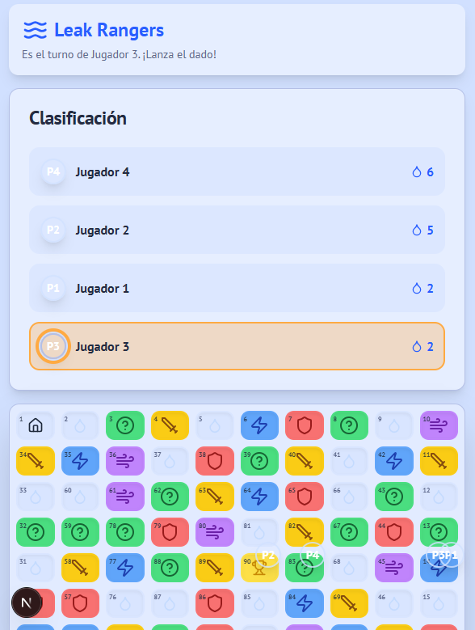

Inicio Versión digital
AquaChallenge es un juego de mesa digitalizado que busca crear conciencia en niñas y niños sobre el uso responsable del agua, mediante partidas cortas, coloridas y llenas de eventos sorpresa.
Bienvenidos al tablero del agua
El objetivo del juego es acumular la mayor cantidad de puntos y aqua coins mientras avanzas por un tablero lleno de preguntas, retos y fugas que ponen a prueba tus hábitos de cuidado del agua.
Está diseñado para grupos de hasta 4 jugadores, ideal para aulas o sesiones de juego guiadas donde se refuerzan conceptos de responsabilidad ambiental de forma lúdica y accesible.
Historia Origen del proyecto
AquaChallenge nació como un juego de mesa físico creado para abordar problemáticas cotidianas relacionadas con el uso excesivo del agua, y evolucionó a una versión digital como proyecto semestral académico.
Desde el inicio, la intención del equipo fue construir una experiencia casual, clara y didáctica, más enfocada en generar conversación y reflexión que en contar una historia narrativa compleja. Cada casilla del tablero representa situaciones reales sobre el uso habitual del agua en casa, la escuela o la comunidad.
El público principal son niñas y niños, por lo que se buscó un equilibrio entre elementos visuales llamativos y textos sencillos, evitando la sobreestimulación y respetando sus ritmos de atención. El mensaje central es que cada jugador puede aportar su granito de arena al cuidado del agua mediante pequeñas acciones diarias.
Concepto del tablero físico
Se definió un tablero con casillas de evento (preguntas, retos, fugas) y una meta final representada por una jarra de agua, junto con el sistema de aqua coins como recurso principal.
Pruebas con jugadores
Se realizaron partidas de prueba para ajustar la dificultad de las preguntas, el impacto de las fugas y la duración de la partida, manteniéndola ágil y entretenida para grupos de 4 jugadores.
Versión videojuego
El juego se llevó a un entorno digital, conservando las reglas esenciales del tablero original e incorporando una interfaz interactiva con dados, turnos, eventos y contador de aqua coins.
Integración en la web
Se creó este sitio como contenedor académico del proyecto, documentando la historia, las mecánicas y el proceso de desarrollo para su evaluación final.
Mecánicas Cómo se juega
AquaChallenge combina tiradas de dado, avance por casillas y eventos especiales que otorgan o quitan aqua coins, de forma que cada decisión impacta en el marcador final de puntos.
Reglas básicas de la partida
- Definir jugadores y turnos. El juego admite hasta 4 jugadores como máximo. Al inicio, todos tiran el dado y el orden de turnos se define desde la tirada más alta hasta la más baja.
- Tirar el dado para avanzar. En su turno, cada jugador tira el dado. El número obtenido indica cuántas casillas avanza su ficha sobre el tablero.
- Resolver la casilla de evento. Al caer en una casilla, el jugador resuelve el evento correspondiente: responder una pregunta, completar un reto, enfrentar una fuga o usar un comodín.
- Ganar y perder aqua coins. Las respuestas correctas y los retos completados otorgan aqua coins, mientras que las fugas y super fugas pueden restar varias monedas de golpe.
- Llegar a la jarra final. Cuando uno o más jugadores alcanzan la casilla final de la jarra, la partida se cierra y gana quien tenga más puntos y aqua coins acumulados.
Tipos de casillas de evento
-
Pregunta +1 aqua coin
El jugador responde una pregunta sobre el uso responsable del agua. Si acierta, gana una aqua coin; si falla, pierde una.
-
Reto +2 / −1 aqua coins
El jugador propone una dinámica para retar a otro jugador. Si gana, recibe dos aqua coins; si pierde, entrega una.
-
Fugas −3 aqua coins
Representa una fuga de agua importante. El jugador pierde tres aqua coins, reforzando la idea de que las fugas no atendidas generan un gran desperdicio.
-
Comodín Protección
El jugador obtiene una carta de comodín que puede usar para protegerse de cualquier castigo de casilla futura, como una fuga o super fuga.
-
Super Fuga Ruleta
Activa una ruleta de consecuencias: según el resultado, puede perjudicar gravemente al jugador o, en algunos casos, otorgar un beneficio por reparar la fuga a tiempo.
Acerca del proyecto Equipo y proceso
Este proyecto se desarrolló como trabajo semestral, integrando diseño de juego de mesa, programación, arte y documentación técnica, con apoyo de herramientas de inteligencia artificial para acelerar el flujo de trabajo.
Propósito didáctico
El juego fue diseñado para niñas y niños de entre 5 y 10 años, combinando elementos visuales claros y textos sencillos. El objetivo es que entiendan mejor cómo sus hábitos cotidianos impactan en el consumo de agua y cómo pueden ayudar a reducir el desperdicio.
Para evitar la sobreestimulación, se priorizaron colores vibrantes pero equilibrados, interfaces simples y partidas de duración moderada, favoreciendo espacios de diálogo guiado por docentes o familiares.
Guillermo Oropeza
Responsable del diseño del tablero, definición de casillas de evento, balance de aqua coins y adaptación de las reglas del juego para el público infantil.
Alex España
Encargado de la lógica del videojuego digital, implementación de tiradas de dado, avance de fichas, control de turnos y gestión del marcador de puntos.
Emiliano Celis
Responsable de la dirección visual, creación de elementos gráficos del tablero, fichas y jarra, así como del flujo de pantallas y experiencia de usuario.
Proceso de desarrollo
- Ideación del concepto y definición de objetivos de aprendizaje (conciencia sobre el agua, hábitos responsables).
- Prototipos físicos del tablero y pruebas con jugadores para ajustar reglas, casillas y distribución de aqua coins.
- Diseño del flujo del juego digital (turnos, tiradas de dado, estados de partida) y diagramas de flujo / UML. INSERTE DIAGRAMA AQUÍ.
- Implementación del videojuego en motor de juego/entorno web y pruebas de jugabilidad.
- Integración con esta página web y preparación de materiales para la presentación semestral.
Avances y recursos del proyecto
A continuación se listan algunos de los recursos utilizados durante el desarrollo de AquaChallenge, incluyendo diagramas de flujo, wireframes y apoyo de herramientas de IA.
- Enlace al diagrama de flujo del juego: Ver diagrama de flujo
- Enlace al wireframe del prototipo en Figma: Ver wireframe del prototipo
-
Listado de herramientas de IA y soporte:
- Grok (conversaciones y apoyo de código)
- Código generado con Grok: Ver archivo Grok.txt
- Panel de gestión del proyecto en Firebase: Firebase Studio
